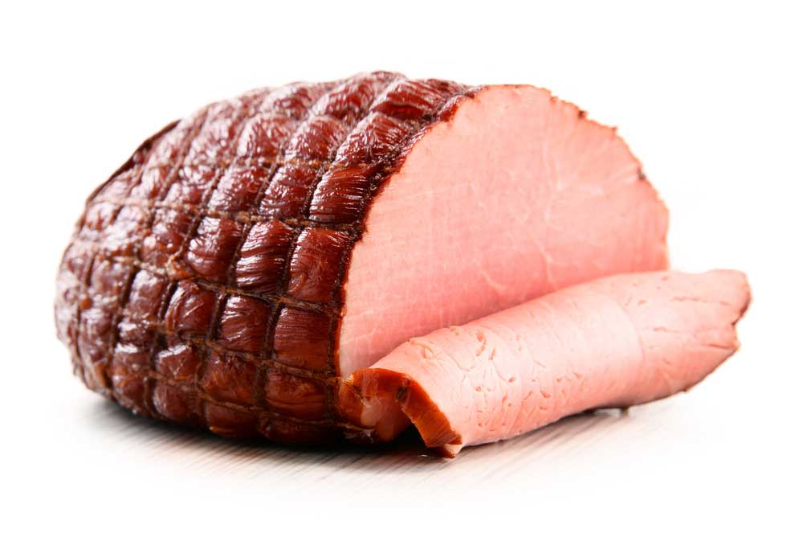

How to Cook a Perfect Ham

The Perfect Ham
Slow cooking a whole ham creates a super-moist, wonderfully tender ham. It's also a great
method when you're feeding a huge holiday crowd: pop a turkey in the oven and a ham in the
slow cooker, and you're set.
This 5-star recipe for Slow Cooker Ham calls for a respectable 8-pound bone-in picnic ham.
Other cooks have had success with a 9-pound spiral-cut honey-cured ham.
Ingridients
- 2 cups packed brown sugar
- 1 (8-pound) cured, bone-in picnic ham (not smoked)
Procedure
- Spread 1 1/2 cups of brown sugar on the bottom of the slow cooker crock.
- Place the ham flat side down in the slow (you may have to trim it a little to make it fit).
- Rub the remaining brown sugar over the ham.
- Cover and cook on Low for 8 hours, or 4 hours for spiral-cut ham.